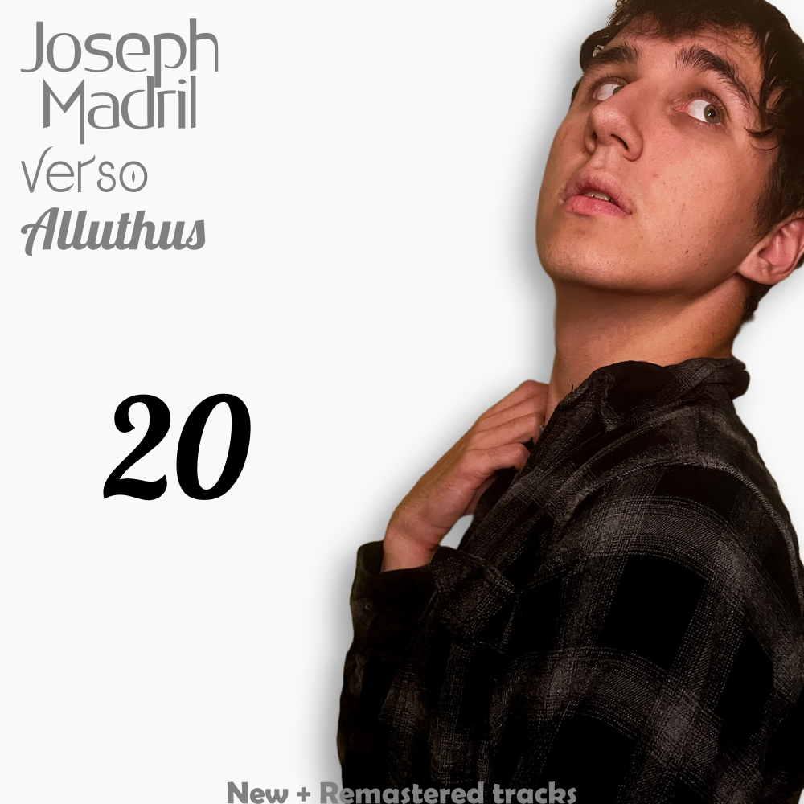

tracks of new and old
celebrating his 20th birthday, this compilation album features tracks split into two discs: newly made
tracks—and previously released tracks that were remastered in high-res audio.
20

release date: 03 june 2022
listen now
disc one - new tracks
- 日本 (Nippon)
- last sand
- 孤独を感じしないで (Kodoku wo Kanji Shinaide)
- Epilogue (Extended Mix)
- linger
disc two - remastered tracks
- sinner - from Alluthus
- Regrets - from Memory Lane
- The Way of LIFE - from the Life soundtrack
- Golden Days - from Memory Lane
- Undertow - from the Undertow EP and Alluthus
- ミュージック (music) - from Alluthus
- Starlight - from Memory Lane
- tranquility - from Alluthus
- Harmony - from the Life soundtrack
singles
- Kodoku wo Kanji Shinaide - march 2022